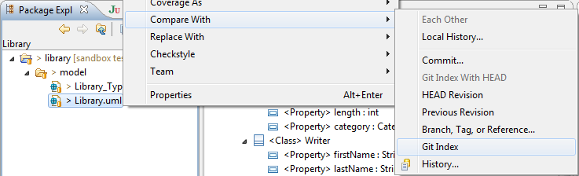
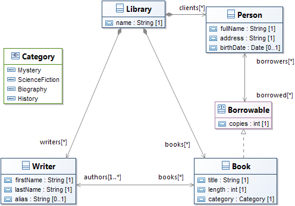
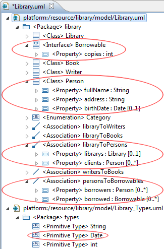
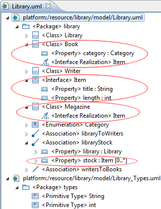
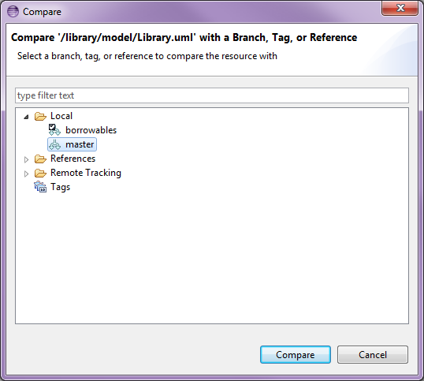
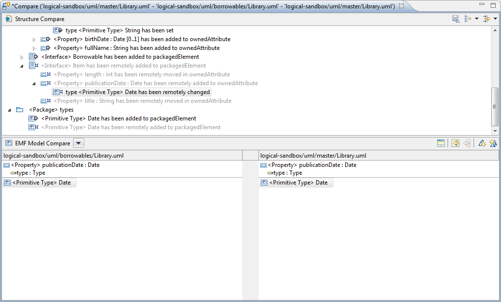

With the following, we'll follow the life cycle of a metamodel describing a very basic library as it evolves separately in different branches. This will allow us to give more concrete examples of how EMF Compare can be used, and how it can help you.
For this test, we'll suppose that you are trying to use EMF Compare on UML models shared under git. This will not go in details about UML and Git. We'll assume that you know how to manipulate an UML model, create or clone a git repository, share a project under it and use standard Git operations.
The name of our sample project will be "library". It contains a single folder "model" containing two models :
The two models will be commited to our git clone. The whole thing looks like this :
The model itself is a very simple library. Graphically speaking :

Now that this initial model file has been committed, we'd like to improve it a little. For example :
Our model now looks like this :

But how do we know exactly what changed? Let's compare this with the file from the Git Index :

This will open a comparison editor that initially looks like the following :

There are three main areas of interest in this editor.
As stated above, (2) and (3) are initially empty. These two panels are there to display more information about the differences detected between our models. Let's select one of the differences displayed in (1) :

This is useful in order to determine exactly what changed in our version, but serves no other purpose : merging changes here would only mean reverting back our modifications to the "clean" state from the repository. Let's commit our changes.
Now, we'd like to create a new feature for our library : we'd like clients to be able to borrow our books. We'll branch our repository in order to create this new feature and name this new branch borrowables :

Starting right away, we add the necessary new concepts to our model to represent the possibility of lending books. We "may" later need to have more than books to be lendable, so let's make a Borrowable interface to hold this concept. We'll also need a Person class, as well as a new data type to represent the person's birth date :

In a tree viewer, our models now look like (highlighted in red, the concepts we added with this step) :

However, while we are working on our borrowables branch, the master branch may still evolve : other people on the project might be adding new concepts of their own, or we could be switching to the main branch for a high priority fix ourselves. Let's imagine that two features have been added since we branched our repository. First, someone needed to have the library hold not only Books, but also Magazines. Second, we needed the publication date of our Books and magazines to be recorded.
The first of these two commits will add the following concepts to our master branch's model :

While the second only adds a primitive type and a property :

If you have followed to this point, we now have two diverging branches, master and borrowables which both hold a different version of our library.uml model. Here is how these two models look like at this point :
| Master | Borrowables |
|---|---|

|
Before we continue working on our Borrowables branch, we'd like to retrieve all modifications that have been pushed to master. With the "Borrowables" branch checked out, we'll use the Compare With > Branch, Tag or Reference action :

and compare with master :

This shows us all differences between our local copy and the master branch that were made since the 'branching' point.

Same as previously, you can navigate through the differences via the top panel, the structural view. There are three main kind of elements displayed here.
Regular elements, that mimic the containment tree of your input models, are there to separate the various differences and let you know where they were actually detected. Then there are
incoming differences, decorated with a blue arrow (
 ) or a derived icon, and
outgoing differences decorated with a green arrow (
) or a derived icon, and
outgoing differences decorated with a green arrow (
 ) or a derived icon.
) or a derived icon.
* '''Incoming''' differences are changes that were made in the remote branch (here, ''master'') since the branching point (common ancestor). * '''Outgoing''' differences are changes taht were made in the local copy (here, the ''borrowables'' branch) since the branching point.
There are no conflicts here, since UML uses computed identifiers (XMI ID) for the model elements. Thus, what looks like a conflict (the "Date" type that's been added on both branch in the types packages) is actually two distinct differences.
The interface also lets you display the common ancestor of both models through the
 icon. For example, if we select the
Book class, we can see how it looks like on all three versions :
icon. For example, if we select the
Book class, we can see how it looks like on all three versions :

You can navigate through the differences using the appropriate actions, either the previous (
 ) or the next (
) or the next (
 ) difference.
) difference.
The remaining two actions are those that actually interest us here we can either merge all non-conflicting differences to the local copy through
 or merge them one after the other through
or merge them one after the other through
 .
.
Merging all differences is not what we seek : we want to keep the changes we made locally, not revert them to the state they had before the branching point (which is their current state on master, the right side). We will then select all incoming differences one after the other and merge them one by one. This gives us our merged model :

Notice that merged differences are displayed in italics and have a distinct icon. All that's left is to save, our model now contains both our local changes and the changes that were made on master.